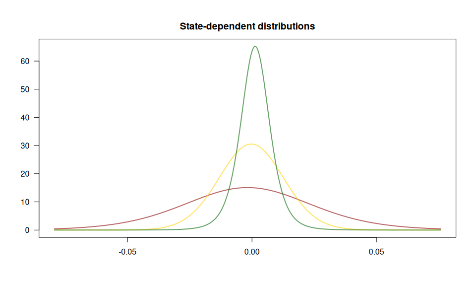

The fHMM R package allows for the detection and characterization of financial market regimes in time series data by applying hidden Markov Models (HMMs). The vignettes outline the package functionality and the model formulation. For a reference on the method, see
Oelschläger, L., and T. Adam. 2021. “Detecting Bearish and Bullish Markets in Financial Time Series Using Hierarchical Hidden Markov Models.” Statistical Modelling. https://doi.org/10.1177/1471082X211034048
Below, we illustrate an application to the German stock index DAX. We also show how to use the package to simulate HMM data, compute the model likelihood, and decode the hidden states using the Viterbi algorithm.
Contributing
We are open to contributions and would appreciate your input:
If you encounter any issues, please submit bug reports as issues.
If you have any ideas for new features, please submit them as feature requests.
If you would like to add extensions to the package, please fork the
masterbranch and submit a merge request.
Example: Fitting an HMM to the DAX
We fit a 3-state HMM with state-dependent t-distributions to the DAX log-returns from 2000 to 2022. The states can be interpreted as proxies for bearish (green below) and bullish markets (red) and an “in-between” market state (yellow).
The package has a build-in function to download financial data from Yahoo Finance:
dax <- download_data(symbol = "^GDAXI")We first need to define the model:
controls <- set_controls(
states = 3,
sdds = "t",
file = dax,
date_column = "Date",
data_column = "Close",
logreturns = TRUE,
from = "2000-01-01",
to = "2022-12-31"
)The function prepare_data() then prepares the data for estimation:
data <- prepare_data(controls)The summary() method gives an overview:
summary(data)
#> Summary of fHMM empirical data
#> * number of observations: 5882
#> * data source: data.frame
#> * date column: Date
#> * log returns: TRUEWe fit the model and subsequently decode the hidden states and compute (pseudo-) residuals:
model <- fit_model(data)
model <- decode_states(model)
model <- compute_residuals(model)The summary() method gives an overview of the model fit:
summary(model)
#> Summary of fHMM model
#>
#> simulated hierarchy LL AIC BIC
#> 1 FALSE FALSE 17649.52 -35269.03 -35168.84
#>
#> State-dependent distributions:
#> t()
#>
#> Estimates:
#> lb estimate ub
#> Gamma_2.1 1.286e-02 2.007e-02 3.113e-02
#> Gamma_3.1 1.208e-06 1.198e-06 1.180e-06
#> Gamma_1.2 1.557e-02 2.489e-02 3.959e-02
#> Gamma_3.2 1.036e-02 1.877e-02 3.378e-02
#> Gamma_1.3 4.119e-07 4.080e-07 4.019e-07
#> Gamma_2.3 2.935e-03 5.275e-03 9.422e-03
#> mu_1 9.655e-04 1.271e-03 1.576e-03
#> mu_2 -8.483e-04 -3.102e-04 2.278e-04
#> mu_3 -3.813e-03 -1.760e-03 2.932e-04
#> sigma_1 5.417e-03 5.853e-03 6.324e-03
#> sigma_2 1.278e-02 1.330e-02 1.384e-02
#> sigma_3 2.348e-02 2.579e-02 2.832e-02
#> df_1 3.957e+00 5.198e+00 6.828e+00
#> df_2 3.870e+08 3.870e+08 3.870e+08
#> df_3 5.549e+00 1.078e+01 2.095e+01
#>
#> States:
#> decoded
#> 1 2 3
#> 2278 2900 704
#>
#> Residuals:
#> Min. 1st Qu. Median Mean 3rd Qu. Max.
#> -3.519694 -0.658831 0.009613 -0.002206 0.669598 3.905726Having estimated the model, we can visualize the state-dependent distributions and the decoded time series:
events <- fHMM_events(
list(dates = c("2001-09-11", "2008-09-15", "2020-01-27"),
labels = c("9/11 terrorist attack", "Bankruptcy Lehman Brothers", "First COVID-19 case Germany"))
)
plot(model, plot_type = c("sdds","ts"), events = events)
The (pseudo-) residuals help to evaluate the model fit:
plot(model, plot_type = "pr")
Simulating HMM data
The fHMM package supports data simulation from an HMM and access to the model likelihood function for model fitting and the Viterbi algorithm for state decoding.
- As an example, we consider a 2-state HMM with state-dependent Gamma distributions and a time horizon of 1000 data points.
controls <- set_controls(
states = 2,
sdds = "gamma",
horizon = 1000
)- Define the model parameters via the
fHMM_parameters()function (unspecified parameters would be set at random).
par <- fHMM_parameters(
controls = controls,
Gamma = matrix(c(0.95, 0.05, 0.05, 0.95), 2, 2),
mu = c(1, 3),
sigma = c(1, 3)
)- Simulate data points from this model via the
simulate_hmm()function.
sim <- simulate_hmm(
controls = controls,
true_parameters = par
)
plot(sim$data, col = sim$markov_chain, type = "b")
- The log-likelihood function
ll_hmm()is evaluated at the identified and unconstrained parameter values, they can be derived via thepar2parUncon()function.
(parUncon <- par2parUncon(par, controls))
#> gammasUncon_21 gammasUncon_12 muUncon_1 muUncon_2 sigmaUncon_1
#> -2.944439 -2.944439 0.000000 1.098612 0.000000
#> sigmaUncon_2
#> 1.098612
#> attr(,"class")
#> [1] "parUncon" "numeric"Note that this transformation takes care of the restrictions, that Gamma must be a transition probability matrix (which we can ensure via the logit link) and that mu and sigma must be positive (an assumption for the Gamma distribution, which we can ensure via the exponential link).
ll_hmm(parUncon, sim$data, controls)
#> [1] -1620.515
ll_hmm(parUncon, sim$data, controls, negative = TRUE)
#> [1] 1620.515- For maximum likelihood estimation of the model parameters, we can numerically optimize
ll_hmm()overparUncon(or rather minimize the negative log-likelihood).
optimization <- nlm(
f = ll_hmm, p = parUncon, observations = sim$data, controls = controls, negative = TRUE
)
(estimate <- optimization$estimate)
#> [1] -3.46338914 -3.44065510 0.05999846 1.06452908 0.11517809 1.07946253- To interpret the estimate, it needs to be back transformed to the constrained parameter space via the
parUncon2par()function. The state-labeling is not identified.
class(estimate) <- "parUncon"
estimate <- parUncon2par(estimate, controls)
par$Gamma
#> state_1 state_2
#> state_1 0.95 0.05
#> state_2 0.05 0.95
estimate$Gamma
#> state_1 state_2
#> state_1 0.96895123 0.03104877
#> state_2 0.03037207 0.96962793
par$mu
#> muCon_1 muCon_2
#> 1 3
estimate$mu
#> muCon_1 muCon_2
#> 1.061835 2.899473
par$sigma
#> sigmaCon_1 sigmaCon_2
#> 1 3
estimate$sigma
#> sigmaCon_1 sigmaCon_2
#> 1.122073 2.943097